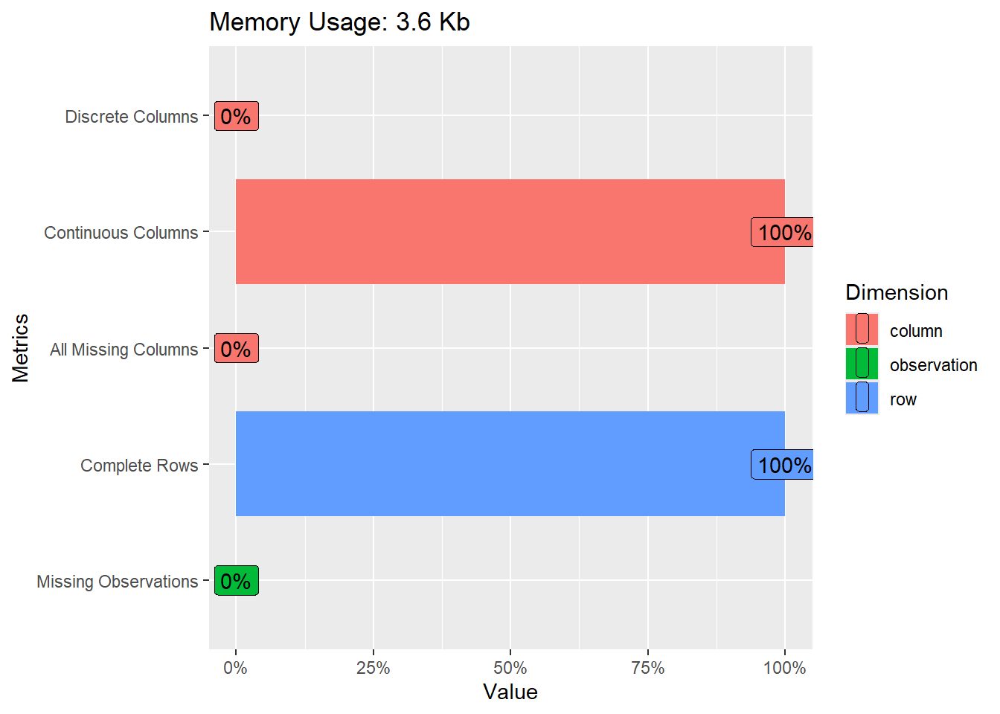
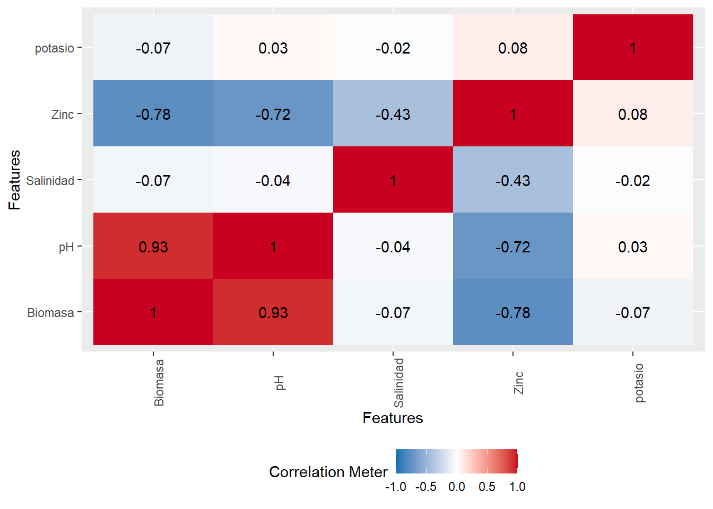
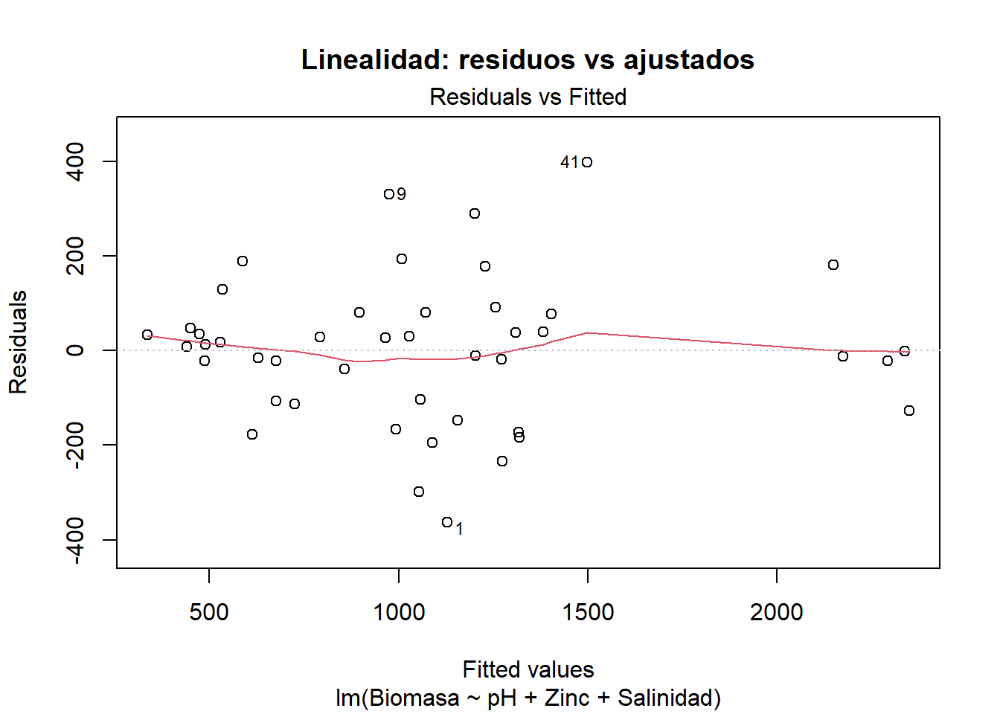
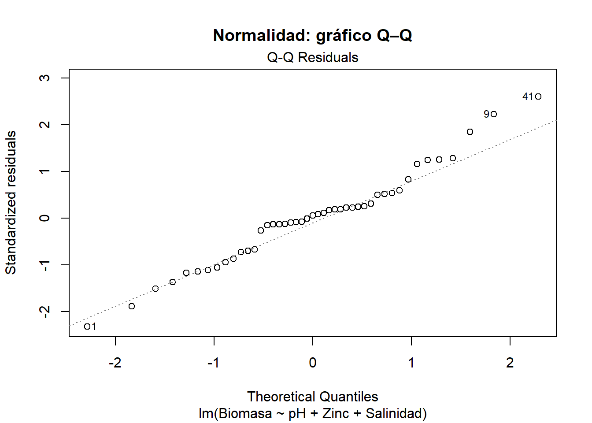
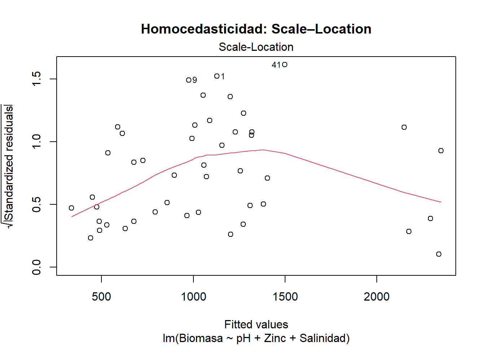
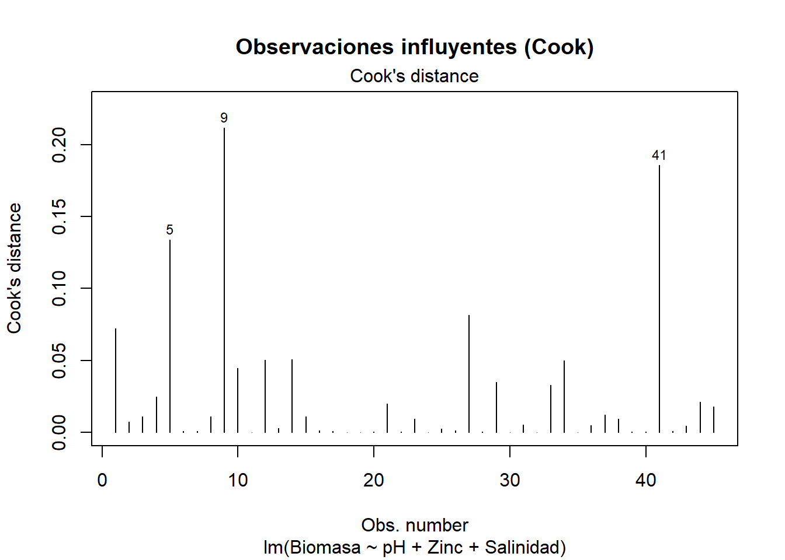

# Instalación y carga de los paquetes utilizados en el análisis
if(!require("DataExplorer")) install.packages(DataExplorer)
if(!require("car")) install.packages(car)
# Importar base de datos
data <- read.csv("Biomasa.csv", sep = ";")21 Regresión múltiple usando R
La regresión lineal múltiple es una técnica estadística fundamental para analizar la relación entre una variable dependiente y varias variables independientes. Su aplicación permite modelar fenómenos complejos en los que múltiples factores influyen simultáneamente en el resultado de interés. En el ámbito agronómico, comprender cómo las características del suelo afectan la producción de biomasa vegetal resulta esencial para optimizar la producción y diseñar estrategias de manejo sostenible (James et al., 2013).
21.1 Supuestos de la regresión lineal múltiple
Para que un modelo de regresión lineal múltiple sea válido, segun Field (2018) deben cumplirse los siguientes supuestos:
Linealidad: Debe existir una relación lineal entre la variable dependiente y cada una de las variables independientes.
Independencia: Los errores (residuos) del modelo deben ser independientes entre sí.
Homocedasticidad: La varianza de los errores debe ser constante para todos los valores de las variables independientes.
Normalidad: Los residuos deben seguir una distribución normal.
Ausencia de multicolinealidad: Las variables independientes no deben estar altamente correlacionadas entre sí.
Ausencia de valores influyentes: No deben existir observaciones que tengan una influencia desproporcionada en los resultados del modelo.
21.2 Contexto de la base de datos
El objetivo de este análisis es determinar el modelo de regresión lineal múltiple que mejor explica la relación entre la producción de biomasa de una especie forrajera y las características del suelo donde crece, específicamente el pH, la salinidad, el contenido de zinc (Zn) y el contenido de potasio (K). Para ello, se dispone de una base de datos con 45 observaciones, en las que se registraron los valores de biomasa (en gramos) y de las variables mencionadas para cada muestra de suelo (Trujillo Sierra, 2022).
Acceso a recursos: El script completo con los ejemplos desarrollados y la base de datos sobre biomasa están disponibles para su consulta y descarga en el siguiente repositorio: https://github.com/Ludwing-MJ/Reg_multiple_EJ
21.3 Preparación del entorno de trabajo
Siguiendo las buenas prácticas recomendadas en el manual, se inicia el análisis con la preparación del entorno de trabajo en R, asegurando la instalación y carga de los paquetes necesarios para la exploración y modelado de los datos. Se utiliza el paquete DataExplorer para la exploración inicial y el paquete car para la evaluación de supuestos del modelo.
21.4 Exploración inicial de los datos
Se recomienda revisar la estructura de los datos y realizar una exploración gráfica inicial para identificar posibles datos faltantes o inconsistencias. Esta exploración es crucial para asegurar la calidad de los datos y la validez del análisis posterior.
# ANÁLISIS EXPLORATORIO DE LOS DATOS
# Revisar la estructura de la base de datos
str(data)'data.frame': 45 obs. of 5 variables:
$ Biomasa : num 765 954 828 755 896 ...
$ pH : num 5 4.7 4.2 4.4 5.55 5.5 4.25 4.45 4.75 4.6 ...
$ Salinidad: num 33 35 32 30 33 33 36 30 38 30 ...
$ Zinc : num 16.4 14 15.3 17.3 22.3 ...
$ potasio : num 1442 1299 1154 1045 522 ...# Exploración gráfica de la base de datos
plot_intro(data)
La función str(data) muestra la estructura de la base de datos, incluyendo el tipo de cada variable y las primeras observaciones. La función plot_intro(data) del paquete DataExplorer genera gráficos que resumen la distribución de las variables y la presencia de datos faltantes. En este caso, no se detectaron datos faltantes, lo que facilita el análisis posterior.
21.5 Análisis exploratorio y matriz de correlaciones
Antes de ajustar el modelo, se analiza la relación entre las variables mediante una matriz de correlaciones. Este paso permite identificar relaciones lineales y posibles problemas de multicolinealidad entre los predictores, lo que es crucial para la interpretación y estabilidad del modelo (James et al., 2013).
# Elaboración de una matriz de correlaciones
plot_correlation(data)
La interpretación de la matriz de correlaciones debe centrarse en detectar correlaciones elevadas entre variables independientes, ya que esto podría indicar multicolinealidad, afectando la precisión de las estimaciones de los coeficientes.
21.6 Ajuste del modelo de regresión lineal múltiple
Se ajusta un modelo inicial considerando todas las variables predictoras:
# ANALISIS DE REGRESION LINEAL MULTIPLE
# Uso de Attach para no colocar el signo de dolar con todas las variables
attach(data)
# Elaborar un modelo empleando todas las variables como predictoras
modelo_completo <- lm(Biomasa ~ pH + Zinc + potasio + Salinidad, data = data)
# Revisar el modelo
summary(modelo_completo)
Call:
lm(formula = Biomasa ~ pH + Zinc + potasio + Salinidad, data = data)
Residuals:
Min 1Q Median 3Q Max
-294.07 -88.87 -9.48 88.08 387.22
Coefficients:
Estimate Std. Error t value Pr(>|t|)
(Intercept) 1492.43223 453.60067 3.290 0.002095 **
pH 262.88941 33.73382 7.793 1.51e-09 ***
Zinc -28.96756 5.66425 -5.114 8.23e-06 ***
potasio -0.11501 0.08191 -1.404 0.168007
Salinidad -33.49121 8.65231 -3.871 0.000392 ***
---
Signif. codes: 0 '***' 0.001 '**' 0.01 '*' 0.05 '.' 0.1 ' ' 1
Residual standard error: 158.9 on 40 degrees of freedom
Multiple R-squared: 0.9231, Adjusted R-squared: 0.9154
F-statistic: 120 on 4 and 40 DF, p-value: < 2.2e-16La función attach(data) permite acceder a las variables de la base de datos directamente por su nombre, sin necesidad de usar el operador $. La salida del modelo (summary(modelo_completo)) proporciona los coeficientes estimados, errores estándar, valores t y p-valores para cada predictor. Un p-valor menor a 0.05 indica que la variable correspondiente tiene un efecto estadísticamente significativo sobre la biomasa (en este ejemplo únicamente la variable potasio no tiene un efecto estadísticamente significativo sobre la biomasa), manteniendo constantes las demás variables. El coeficiente de determinación ajustado (Adjusted R-squared) indica el porcentaje de variabilidad de la biomasa explicado por el modelo siendo este del 91.54% para el modelo incial.
21.7 Selección del modelo mediante el método paso a paso (stepwise) y criterio BIC
Para seleccionar el modelo más parsimonioso y evitar el sobreajuste, se emplea el método paso a paso (stepwise), utilizando el criterio de información bayesiano (BIC) como criterio de selección. El BIC penaliza la complejidad del modelo de manera más estricta que el AIC, favoreciendo modelos más simples y robustos, especialmente recomendable cuando se dispone de un número limitado de observaciones, como en este caso (Burnham & Anderson, 2004).
# Aplicar stepwise (BIC como criterio)
modelo_final <- step(modelo_completo, direction = "both",
k = log(nrow(data)), trace = 0)
summary(modelo_final)
Call:
lm(formula = Biomasa ~ pH + Zinc + Salinidad, data = data)
Residuals:
Min 1Q Median 3Q Max
-363.52 -107.13 8.46 78.41 398.30
Coefficients:
Estimate Std. Error t value Pr(>|t|)
(Intercept) 1501.972 458.892 3.273 0.002165 **
pH 255.014 33.656 7.577 2.56e-09 ***
Zinc -30.403 5.637 -5.394 3.14e-06 ***
Salinidad -34.791 8.704 -3.997 0.000261 ***
---
Signif. codes: 0 '***' 0.001 '**' 0.01 '*' 0.05 '.' 0.1 ' ' 1
Residual standard error: 160.8 on 41 degrees of freedom
Multiple R-squared: 0.9193, Adjusted R-squared: 0.9134
F-statistic: 155.6 on 3 and 41 DF, p-value: < 2.2e-16El modelo final seleccionado incluye únicamente las variables que contribuyen significativamente a explicar la variabilidad de la biomasa, considerando la penalización por complejidad. Siendo el modelo final el siguiente:
Biomasa = 1501.97 + 255.01 (pH) - 30.40 (Zinc) - 34.79 (Salinidad)
Este modelo tiene un coeficiente de determinación ajustado del 91.34% y tanto el modelo como todos sus estimadores son estadísticamente significativo lo que implica que este es un modelo bastante confiable.
21.8 Evaluación de los supuestos del modelo final
La validez inferencial de un modelo de regresión lineal múltiple descansa en el cumplimiento simultáneo de seis supuestos clásicos: linealidad, independencia de los errores, homocedasticidad, normalidad de los residuos, ausencia de multicolinealidad y ausencia de valores influyentes. A continuación se desarrolla cada uno de estos supuestos y se discuten posibles acciones correctivas cuando se detectan violaciones (Field, 2018; James et al., 2013; Venables & Ripley, 2002).
21.8.1 Linealidad
La forma funcional que vincula la variable dependiente con cada predictor debe ser lineal. Si la relación real es curvilínea, las estimaciones serán sesgadas y los intervalos de confianza perderán validez (James et al., 2013).
# Gráfico de residuos versus valores ajustados
plot(modelo_final, 1,
main = "Linealidad: residuos vs ajustados")
Interpretación: Un patrón en forma de “U” o “∩” indica no linealidad. En ese caso se recomiendan transformaciones (log, raíz cuadrada), introducción de términos polinómicos o métodos no paramétricos (James et al., 2013). Para este caso la ausencia de patrones sistemáticos en el gráfico anterior indica que la relación es aproximadamente lineal.
21.8.2 Independencia de los errores
Los residuos deben ser incorrelados entre sí. La autocorrelación es habitual en series temporales o datos espaciales y conduce a varianzas de los coeficientes subestimadas (Field, 2018).
# Prueba de Durbin-Watson
dwt(modelo_final) lag Autocorrelation D-W Statistic p-value
1 0.1225464 1.598719 0.112
Alternative hypothesis: rho != 0Interpretación: Un estadístico D-W próximo a 2 indica independencia; valores < 1.5 sugieren autocorrelación positiva (Field, 2018). Si se detecta autocorrelación, puede recurrirse a modelos con estructura de correlación (GLS), regresión con errores AR(1) o incluir variables de tiempo/espacio (Venables & Ripley, 2002). También se puede interpretar únicamente el p-valor que para este ejemplo al ser mayor que el nivel de significancia (0.12>0.05) indica se cumple con el supuesto de independencia de los errores.
21.8.3 Normalidad de los residuos
Se requiere que los residuos sigan una distribución normal para garantizar la validez de los contrastes t y F (Venables & Ripley, 2002). La normalidad es menos crítica con tamaños muestrales grandes, pero se verifica por completitud.
# Q–Q plot
plot(modelo_final, 2,
main = "Normalidad: gráfico Q–Q")
# Test de Shapiro–Wilk
shapiro.test(residuals(modelo_final))
Shapiro-Wilk normality test
data: residuals(modelo_final)
W = 0.97443, p-value = 0.4146Interpretación: Un p-valor > 0.05 indica que no se rechaza la normalidad (Cleveland, 1993). Si el supuesto falla, suele bastar con transformaciones o con el uso de intervalos de confianza bootstrap, menos sensibles a la no normalidad (James et al., 2013).
21.8.4 Homocedasticidad
La varianza de los errores debe permanecer constante a lo largo del rango de valores predichos. La heterocedasticidad provoca estimaciones ineficientes y p-valores poco fiables (James et al., 2013).
# Gráfico Scale–Location (√|residuos| vs ajustados)
plot(modelo_final, 3,
main = "Homocedasticidad: Scale–Location")
# Test de Breusch–Pagan
ncvTest(modelo_final)Non-constant Variance Score Test
Variance formula: ~ fitted.values
Chisquare = 0.7243543, Df = 1, p = 0.39472Interpretación: Un p-valor > 0.05 respalda la homocedasticidad. Cuando se viola este supuesto, son útiles las transformaciones de la respuesta (log), la estimación con errores estándar robustos (vcovHC) o el empleo de modelos ponderados (Weighted Least Squares) (Field, 2018).
21.8.5 Ausencia de multicolinealidad
La colinealidad incrementa la varianza de las estimaciones y dificulta la interpretación de los coeficientes (Field, 2018).
# Revision de ausencia de multicolinealidad
# Calcular el VIF para cada variable independiente
vif(modelo_final) pH Zinc Salinidad
3.035319 3.703030 1.784158 Criterios: VIF < 5 se considera aceptable; valores entre 5 y 10 requieren atención; > 10 indican colinealidad severa (James et al., 2013).
Interpretación: Las tres variables independientes presentan un VIF < 5, esto se considera aceptable y sugiere ausencia de colinealidad entre las variables independientes. Entre las estrategias de mitigación cuando no se cumple el supuesto se incluyen eliminar o combinar variables, centrar/estandarizar predictores o utilizar componentes principales (PCR).
21.8.6 Ausencia de valores influyentes
Observaciones con alta influencia pueden distorsionar drásticamente el ajuste (Field, 2018).
# Gráfico de la distancia de Cook
plot(modelo_final, 4,
main = "Observaciones influyentes (Cook)")
# Identificación numérica de casos influyentes
which(cooks.distance(modelo_final) >
4 / nrow(data)) 5 9 41
5 9 41 Regla práctica: Valores de Cook > 4/n sugieren influencia notable (James et al., 2013). Ante detección, se recomienda comprobar errores de registro, justificar su inclusión o aplicar métodos robustos (RLM).
Interpretación: En este modelo se identificaron los registros 5, 9 y 41 como observaciones potencialmente influyentes, de acuerdo con los valores obtenidos en la distancia de Cook.
Se recomienda al lector realizar una comprobación sistemática del impacto de las observaciones influyentes en el modelo de regresión. Para ello, se sugiere ajustar el modelo dos veces: la primera, utilizando el conjunto completo de datos; y la segunda, excluyendo los registros identificados como influyentes (en este caso, los registros 5, 9 y 41). Posteriormente, se debe comparar los coeficientes estimados, los errores estándar, el coeficiente de determinación ajustado (R²) y los valores p de ambos modelos.
Este procedimiento permite evaluar la robustez de los resultados y determinar en qué medida las observaciones influyentes afectan la interpretación y la validez del modelo. En caso de observar diferencias sustanciales entre los modelos, se recomienda discutir las posibles causas y considerar alternativas metodológicas, como la aplicación de técnicas de regresión robusta o la revisión detallada de los datos involucrados (Field, 2018; James et al., 2013).